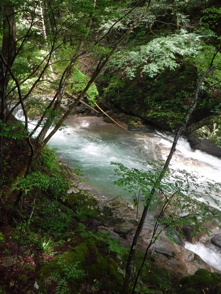
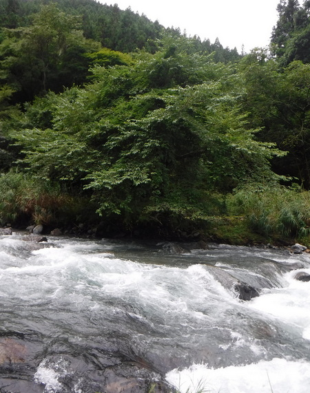
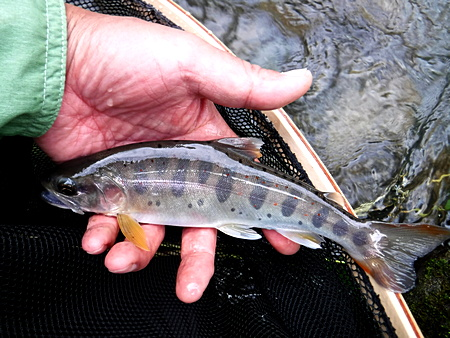
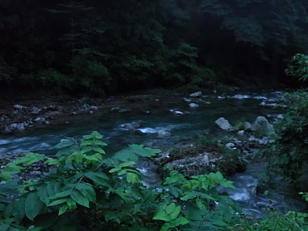

釣行日誌 故郷編
2021/08/21 初恋の日のように
いつも一緒にイワナ釣りに行っている叔父のすぐ上の兄、つまり僕にとっては５番目の叔父は、最近、週に３回病院に通って透析をしなければいけなくなってしまった。当然体力も、体重も、みるみるうちに落ちてきて、釣りにも行けなくなった。
何もせずに家に居るのは退屈だろうと、録画した釣り番組のDVDを見せに行った。
『ほほぉ.....これはなかなか面白い』
などと感心していた叔父が、
「あれは、４、５年前だったかなぁ.....」
と、訥々と、しかし自慢気たっぷりに語り出した。
「釣れた噂を釣りに行ってはいけない」
という諺があることをじゅうじゅう知りながら、叔父が５年前、 4.5m の竿に糸は 0.8 号を 2m のちょうちん釣り仕掛けで、掛かってから取り込む場所が無かったので田んぼの石垣から川原へ飛び降りてファイトし、なんとか手網に収めたという 40cm オーバーのイワナの話を聞かされて、ついついこの川目指して出かけて来てしまった。
ゴツい身体に愛嬌のある丸顔が特徴だった、やはり釣り好きだった亡き従兄弟、Ｓ君が釣り上げた幅広の尺上アマゴの魚拓に、この川の名前が記されていたことも引き金となっていた。
さらに、梅雨の再来のような、このところの長雨で、渓はルアー向きの増水になっていることだろうとの計算もあった。
村の雑貨屋で入漁券を買ってから、叔父の語った集落を目指して車を走らせるが、なにぶん幾つも渓筋のある奥深い地形のため、どこがどこだかわからない。いつもの里川とはまったく勝手が違い、本格的な「深山幽谷」風の山岳渓流である。
迷い迷ったあげく、結局入渓点を見つけられないまま、本流との合流点近くまで下ってきてしまった。林道から見ると谷底ははるか下であり、アプローチが困難だった。おまけに増水で、川通しに難儀をしそうである。しかし、なんとか入れそうな場所を見つけ、そばに空き地があったので車を停め、身支度をした。そして、少し上流へ歩いてから、鬱蒼とした杉林の間を注意深く降りてゆく。

初めての渓を釣るのは、どこか初めてのデートの日が思い出される。いそいそとタックルを組み上げ、ルアーを振り込んでみる。
予想通りルアー釣りには絶好の水量だった。水温は 18度。渓相も良く、絶好のポイントが多数続くが、魚の反応が全く無い。アマゴがメインか、それともイワナなのか、見当も付かない。
２時間ほど粘っていたら、対岸の木立の下に、ちょっとした深みが目に留まった。

枝に掛けないように気を付けて、ワンパターンの Dr.ミノーのフローティングを投射する。釣り下りなので、ほとんどリーリングせずに、流れによるアクションだけで泳がせていたミノーからの手応えが重くなった。
『ああ、ちょうど流芯に入ったな.....』
と思っていると、ガクンバタンと重みが暴れ出した。
『お！ ヒットか！』
流れに突入した魚が力強く引く。何とかフックが外れないようテンションを保ちながら数メートル下って、こちら岸の淀みに誘導する。岸辺には葦が生い茂っていたので強引に引っこ抜くのはやめて、慎重にランディングネットに収める。サイズは可愛らしいが、盛夏のアマゴらしく、見事な美しさだった。

「やった～っ！！」
思わず大声を出してしまうほど嬉しかった。
何枚も写真を撮していると、ふと、ランディングネットをチェストバッグのストラップと結んでいる、流失防止用のスパイラルコードを付け忘れてきたことに気づいた。これはイカン。何かの弾みでネットがホルダーから外れたら、流されてしまう。これからの川歩きと藪漕ぎの時には十分気を付けよう。
一転して沈鬱な気分が盛り上がった。ちょうど腹も減ったところだったので、川原に座り込んでスポーツ飲料とカロリーメイトの昼食にする。
昼食をとったすぐ下の淵で、カツンというアタリで、13cm くらいのアマゴがスレで掛かった。大事にフックを外し、水に戻してやる。
と、いきなり大粒の雨が降ってきた。とりあえず岸沿いの大木の下へ逃げ込んだが、雨具を車に置いてきてしまった。やはりいくら天気が良くても、雨具は携行しなければいけないと反省した。林道の方を見上げると、何となく車を停めた場所に近いような気がしたので、ずぶ濡れになってはいくら夏でも身体が冷えると思い、いったん車に戻ることにした。思ったよりも楽に林道まで上がることが出来、上流側30メートルほどに車があった。さっそくレインコートを取り出して着る。
もう一度渓に降りてゆき、さて、第２ラウンドだ。
さらに釣り下って行くと、木立に覆われて薄暗い淵の尻で、流れに乗せたミノーが岩のそばを通った瞬間、岩陰から 26cm くらいの黒い影が飛び出した。
『あっ！ 出た！ イワナか？』
あの勢いで飛び出して、なぜ喰わないのか不思議だったが、ルアーを別の色に交換して、写真など撮りつつ、10分間待つ。
再度、キャスト。しかし出ない。小型のスピナーに交換し、さらにゆっくり引く。それでも無反応。
かれこれ 30分近く粘ったが、とうとう再度姿を見ることはなかった。いやぁ野生の魚は賢いわ.....（笑）
問題の岩を通り過ぎる時によく見てみると、エグレが無く、例の魚はそこの緩流部に待避していただけのようだった。隠れ家が無かったので、ルアーを喰い損ねた後は、流芯の深みへと逃げたのだろう。重いルアーで川の中央を探ってみなかったのが敗因だった。それともあれはアマゴだったのか？ あの体色の黒さはイワナだったろうと思えた。イワナならば、二度、三度と出ても不思議は無いのだが。
今度は通らずの大淵に出くわし、スプーンで深みを攻めてみたが、根掛かりでなくす。泣けた。
斜面には、釣り人の通った径がそれなりに出来ており、林道へと上がる。再び、右往左往しながら車で村の中心部へ戻る。
まだ少し時間があったので、別の渓の本流を夕暮れまで攻めてみたが、どうにも下流過ぎて、アユやらカワムツの気配むんむんで、出るはずの大型アマゴは出なかった。（笑）

結局今日はアマゴ１尾（＋スレのおチビちゃん) のみ。
「夏山女魚、一里一尾」
という諺もあったなぁと、帰途、独りつぶやいた。
釣行日誌 故郷編 目次へ
サイトマップ
ホームへ
お問い合わせ